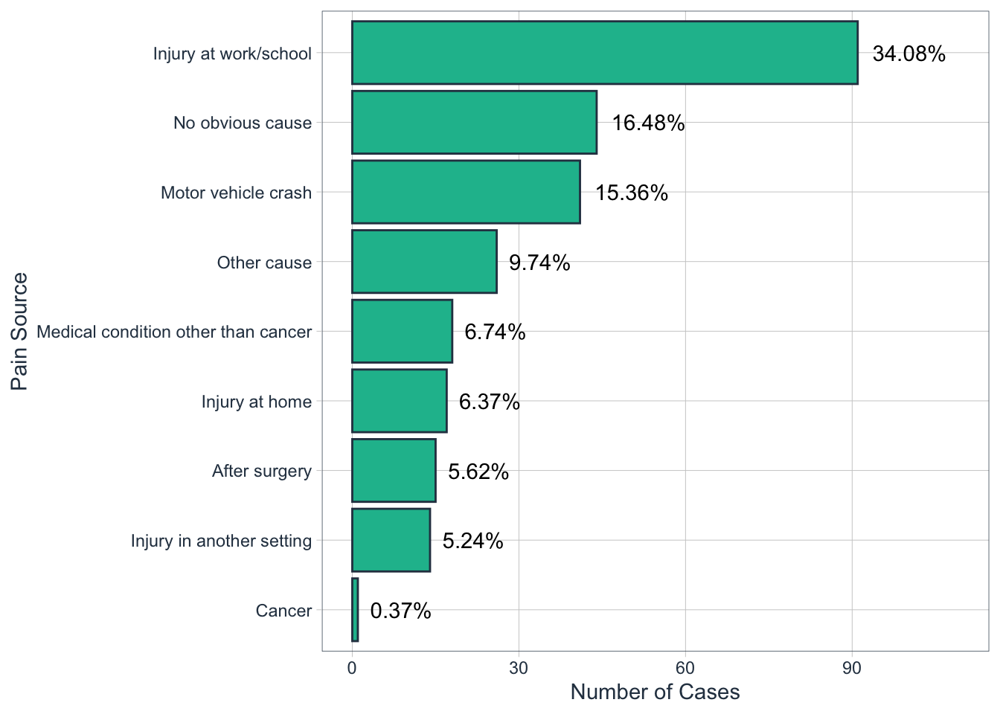

## # A tibble: 9 x 4
## pain_source n pct total_n
## <fct> <int> <chr> <fct>
## 1 Injury at work/school 91 34.08% 267
## 2 No obvious cause 44 16.48% 267
## 3 Motor vehicle crash 41 15.36% 267
## 4 Other cause 26 9.74% 267
## 5 Medical condition other than cancer 18 6.74% 267
## 6 Injury at home 17 6.37% 267
## 7 After surgery 15 5.62% 267
## 8 Injury in another setting 14 5.24% 267
## 9 Cancer 1 0.37% 267
Session Information:
## ─ Session info ───────────────────────────────────────────────────────────────
## setting value
## version R version 3.6.2 (2019-12-12)
## os macOS Catalina 10.15.1
## system x86_64, darwin15.6.0
## ui X11
## language (EN)
## collate en_AU.UTF-8
## ctype en_AU.UTF-8
## tz Australia/Melbourne
## date 2020-05-10
##
## ─ Packages ───────────────────────────────────────────────────────────────────
## package * version date lib source
## abind 1.4-5 2016-07-21 [1] CRAN (R 3.6.0)
## arm 1.11-1 2020-04-27 [1] CRAN (R 3.6.2)
## assertthat 0.2.1 2019-03-21 [1] CRAN (R 3.6.0)
## backports 1.1.6 2020-04-05 [1] CRAN (R 3.6.2)
## base64enc 0.1-3 2015-07-28 [1] CRAN (R 3.6.0)
## BayesFactor 0.9.12-4.2 2018-05-19 [1] CRAN (R 3.6.0)
## bayesplot 1.7.1 2019-12-01 [1] CRAN (R 3.6.0)
## bayestestR 0.6.0 2020-04-20 [1] CRAN (R 3.6.2)
## bbmle 1.0.23.1 2020-02-03 [1] CRAN (R 3.6.0)
## bdsmatrix 1.3-4 2020-01-13 [1] CRAN (R 3.6.0)
## boot 1.3-25 2020-04-26 [1] CRAN (R 3.6.2)
## bridgesampling 1.0-0 2020-02-26 [1] CRAN (R 3.6.0)
## Brobdingnag 1.2-6 2018-08-13 [1] CRAN (R 3.6.0)
## broom * 0.5.6 2020-04-20 [1] CRAN (R 3.6.2)
## broom.mixed 0.2.5 2020-04-19 [1] CRAN (R 3.6.2)
## broomExtra * 4.0.0 2020-04-22 [1] CRAN (R 3.6.2)
## Cairo 1.5-12 2020-04-11 [1] CRAN (R 3.6.2)
## callr 3.4.3 2020-03-28 [1] CRAN (R 3.6.2)
## car * 3.0-7 2020-03-11 [1] CRAN (R 3.6.0)
## carData * 3.0-3 2019-11-16 [1] CRAN (R 3.6.0)
## cellranger 1.1.0 2016-07-27 [1] CRAN (R 3.6.0)
## class 7.3-17 2020-04-26 [1] CRAN (R 3.6.2)
## cli 2.0.2 2020-02-28 [1] CRAN (R 3.6.0)
## cluster 2.1.0 2019-06-19 [1] CRAN (R 3.6.2)
## coda 0.19-3 2019-07-05 [1] CRAN (R 3.6.0)
## codetools 0.2-16 2018-12-24 [1] CRAN (R 3.6.2)
## coin 1.3-1 2019-08-28 [1] CRAN (R 3.6.0)
## colorspace 1.4-1 2019-03-18 [1] CRAN (R 3.6.0)
## colourpicker 1.0 2017-09-27 [1] CRAN (R 3.6.0)
## correlation * 0.2.0 2020-04-09 [1] CRAN (R 3.6.2)
## correlationfunnel * 0.1.0 2019-08-06 [1] CRAN (R 3.6.0)
## corrplot 0.84 2017-10-16 [1] CRAN (R 3.6.0)
## corrr * 0.4.2 2020-03-22 [1] CRAN (R 3.6.0)
## cowplot * 1.0.0 2019-07-11 [1] CRAN (R 3.6.0)
## crayon 1.3.4 2017-09-16 [1] CRAN (R 3.6.0)
## crosstalk 1.1.0.1 2020-03-13 [1] CRAN (R 3.6.0)
## curl 4.3 2019-12-02 [1] CRAN (R 3.6.0)
## data.table 1.12.8 2019-12-09 [1] CRAN (R 3.6.0)
## DBI 1.1.0 2019-12-15 [1] CRAN (R 3.6.0)
## dbplyr 1.4.3 2020-04-19 [1] CRAN (R 3.6.2)
## DescTools 0.99.34 2020-03-12 [1] CRAN (R 3.6.0)
## dials * 0.0.6 2020-04-03 [1] CRAN (R 3.6.2)
## DiceDesign 1.8-1 2019-07-31 [1] CRAN (R 3.6.0)
## dichromat 2.0-0 2013-01-24 [1] CRAN (R 3.6.0)
## digest 0.6.25 2020-02-23 [1] CRAN (R 3.6.0)
## dplyr * 0.8.5 2020-03-07 [1] CRAN (R 3.6.0)
## DT 0.13 2020-03-23 [1] CRAN (R 3.6.0)
## dygraphs 1.1.1.6 2018-07-11 [1] CRAN (R 3.6.0)
## eeptools * 1.2.2 2019-03-19 [1] CRAN (R 3.6.0)
## effectsize 0.3.0 2020-04-11 [1] CRAN (R 3.6.2)
## ellipsis 0.3.0 2019-09-20 [1] CRAN (R 3.6.0)
## emmeans 1.4.6 2020-04-19 [1] CRAN (R 3.6.2)
## EMT 1.1 2013-01-29 [1] CRAN (R 3.6.0)
## estimability 1.3 2018-02-11 [1] CRAN (R 3.6.0)
## evaluate 0.14 2019-05-28 [1] CRAN (R 3.6.0)
## expm 0.999-4 2019-03-21 [1] CRAN (R 3.6.0)
## ez 4.4-0 2016-11-02 [1] CRAN (R 3.6.0)
## fansi 0.4.1 2020-01-08 [1] CRAN (R 3.6.0)
## farver 2.0.3 2020-01-16 [1] CRAN (R 3.6.0)
## fastGHQuad 1.0 2018-09-30 [1] CRAN (R 3.6.0)
## fastmap 1.0.1 2019-10-08 [1] CRAN (R 3.6.0)
## fht 0.0.0.9000 2020-05-10 [1] local
## forcats * 0.5.0 2020-03-01 [1] CRAN (R 3.6.0)
## foreach 1.5.0 2020-03-30 [1] CRAN (R 3.6.2)
## foreign 0.8-72 2019-08-02 [1] CRAN (R 3.6.2)
## Formula 1.2-3 2018-05-03 [1] CRAN (R 3.6.0)
## fs * 1.4.1 2020-04-04 [1] CRAN (R 3.6.2)
## furrr 0.1.0 2018-05-16 [1] CRAN (R 3.6.0)
## future 1.17.0 2020-04-18 [1] CRAN (R 3.6.2)
## generics 0.0.2 2018-11-29 [1] CRAN (R 3.6.2)
## GGally * 1.5.0 2020-03-25 [1] CRAN (R 3.6.0)
## ggcorrplot 0.1.3 2019-05-19 [1] CRAN (R 3.6.0)
## ggExtra 0.9 2019-08-27 [1] CRAN (R 3.6.0)
## ggplot2 * 3.3.0 2020-03-05 [1] CRAN (R 3.6.0)
## ggrepel 0.8.2 2020-03-08 [1] CRAN (R 3.6.0)
## ggridges 0.5.2 2020-01-12 [1] CRAN (R 3.6.0)
## ggsignif 0.6.0 2019-08-08 [1] CRAN (R 3.6.0)
## ggstatsplot 0.4.0 2020-04-15 [1] CRAN (R 3.6.2)
## glmnet 3.0-2 2019-12-11 [1] CRAN (R 3.6.0)
## globals 0.12.5 2019-12-07 [1] CRAN (R 3.6.0)
## glue * 1.4.0 2020-04-03 [1] CRAN (R 3.6.2)
## gower 0.2.1 2019-05-14 [1] CRAN (R 3.6.0)
## GPfit 1.0-8 2019-02-08 [1] CRAN (R 3.6.0)
## gridExtra 2.3 2017-09-09 [1] CRAN (R 3.6.0)
## groupedstats 0.2.2 2020-04-05 [1] CRAN (R 3.6.2)
## gtable 0.3.0 2019-03-25 [1] CRAN (R 3.6.0)
## gtools 3.8.2 2020-03-31 [1] CRAN (R 3.6.2)
## hardhat 0.1.2 2020-02-28 [1] CRAN (R 3.6.0)
## haven 2.2.0 2019-11-08 [1] CRAN (R 3.6.0)
## hms 0.5.3 2020-01-08 [1] CRAN (R 3.6.0)
## htmltools 0.4.0 2019-10-04 [1] CRAN (R 3.6.0)
## htmlwidgets 1.5.1 2019-10-08 [1] CRAN (R 3.6.0)
## httpuv 1.5.2 2019-09-11 [1] CRAN (R 3.6.0)
## httr 1.4.1 2019-08-05 [1] CRAN (R 3.6.0)
## igraph 1.2.5 2020-03-19 [1] CRAN (R 3.6.0)
## infer * 0.5.1 2019-11-19 [1] CRAN (R 3.6.0)
## inline 0.3.15 2018-05-18 [1] CRAN (R 3.6.0)
## insight 0.8.3 2020-04-20 [1] CRAN (R 3.6.2)
## ipmisc 2.0.0 2020-04-11 [1] CRAN (R 3.6.2)
## ipred 0.9-9 2019-04-28 [1] CRAN (R 3.6.0)
## iterators 1.0.12 2019-07-26 [1] CRAN (R 3.6.0)
## janeaustenr 0.1.5 2017-06-10 [1] CRAN (R 3.6.0)
## janitor * 2.0.1 2020-04-12 [1] CRAN (R 3.6.2)
## jcolors 0.0.4 2019-05-22 [1] CRAN (R 3.6.0)
## jmv 1.2.5 2020-02-17 [1] CRAN (R 3.6.0)
## jmvcore 1.2.5 2020-02-05 [1] CRAN (R 3.6.0)
## jsonlite 1.6.1 2020-02-02 [1] CRAN (R 3.6.0)
## knitr 1.28 2020-02-06 [1] CRAN (R 3.6.0)
## labeling 0.3 2014-08-23 [1] CRAN (R 3.6.0)
## LaplacesDemon 16.1.4 2020-02-06 [1] CRAN (R 3.6.0)
## later 1.0.0 2019-10-04 [1] CRAN (R 3.6.0)
## lattice 0.20-41 2020-04-02 [1] CRAN (R 3.6.2)
## lava 1.6.7 2020-03-05 [1] CRAN (R 3.6.0)
## lazyeval 0.2.2 2019-03-15 [1] CRAN (R 3.6.0)
## lhs 1.0.2 2020-04-13 [1] CRAN (R 3.6.2)
## libcoin 1.0-5 2019-08-27 [1] CRAN (R 3.6.0)
## lifecycle 0.2.0 2020-03-06 [1] CRAN (R 3.6.0)
## lime * 0.5.1 2019-11-12 [1] CRAN (R 3.6.0)
## listenv 0.8.0 2019-12-05 [1] CRAN (R 3.6.0)
## lme4 1.1-23 2020-04-07 [1] CRAN (R 3.6.2)
## lmtest 0.9-37 2019-04-30 [1] CRAN (R 3.6.0)
## logspline 2.1.15 2019-11-08 [1] CRAN (R 3.6.0)
## loo 2.2.0 2019-12-19 [1] CRAN (R 3.6.0)
## lubridate * 1.7.8 2020-04-06 [1] CRAN (R 3.6.2)
## magrittr * 1.5 2014-11-22 [1] CRAN (R 3.6.0)
## mapproj 1.2.7 2020-02-03 [1] CRAN (R 3.6.0)
## maps 3.3.0 2018-04-03 [1] CRAN (R 3.6.0)
## maptools 0.9-9 2019-12-01 [1] CRAN (R 3.6.0)
## markdown 1.1 2019-08-07 [1] CRAN (R 3.6.0)
## MASS 7.3-51.6 2020-04-26 [1] CRAN (R 3.6.2)
## Matrix 1.2-18 2019-11-27 [1] CRAN (R 3.6.2)
## MatrixModels 0.4-1 2015-08-22 [1] CRAN (R 3.6.0)
## matrixStats 0.56.0 2020-03-13 [1] CRAN (R 3.6.0)
## mc2d 0.1-18 2017-03-06 [1] CRAN (R 3.6.0)
## memor * 0.2 2019-01-16 [1] CRAN (R 3.6.0)
## metaBMA 0.6.2 2019-09-16 [1] CRAN (R 3.6.0)
## metafor 2.4-0 2020-03-19 [1] CRAN (R 3.6.0)
## metaplus 0.7-11 2018-04-01 [1] CRAN (R 3.6.0)
## mgcv 1.8-31 2019-11-09 [1] CRAN (R 3.6.2)
## mime 0.9 2020-02-04 [1] CRAN (R 3.6.0)
## miniUI 0.1.1.1 2018-05-18 [1] CRAN (R 3.6.0)
## minqa 1.2.4 2014-10-09 [1] CRAN (R 3.6.0)
## mnormt 1.5-6 2020-02-03 [1] CRAN (R 3.6.0)
## modelr 0.1.7 2020-04-30 [1] CRAN (R 3.6.2)
## modeltools 0.2-23 2020-03-05 [1] CRAN (R 3.6.0)
## multcomp 1.4-13 2020-04-08 [1] CRAN (R 3.6.2)
## multcompView 0.1-8 2019-12-19 [1] CRAN (R 3.6.0)
## munsell 0.5.0 2018-06-12 [1] CRAN (R 3.6.0)
## mvtnorm 1.1-0 2020-02-24 [1] CRAN (R 3.6.0)
## naniar * 0.5.1 2020-04-30 [1] CRAN (R 3.6.2)
## nlme 3.1-147 2020-04-13 [1] CRAN (R 3.6.2)
## nloptr 1.2.2.1 2020-03-11 [1] CRAN (R 3.6.0)
## nnet 7.3-14 2020-04-26 [1] CRAN (R 3.6.2)
## nortest 1.0-4 2015-07-30 [1] CRAN (R 3.6.0)
## numDeriv 2016.8-1.1 2019-06-06 [1] CRAN (R 3.6.0)
## oompaBase 3.2.9 2019-08-24 [1] CRAN (R 3.6.0)
## openxlsx 4.1.4 2019-12-06 [1] CRAN (R 3.6.0)
## pairwiseComparisons 0.3.0 2020-04-11 [1] CRAN (R 3.6.2)
## paletteer 1.1.0 2020-03-10 [1] CRAN (R 3.6.0)
## palr 0.2.0 2020-01-30 [1] CRAN (R 3.6.0)
## pals 1.6 2019-12-04 [1] CRAN (R 3.6.0)
## parameters 0.6.1 2020-04-08 [1] CRAN (R 3.6.2)
## parsnip * 0.1.0 2020-04-09 [1] CRAN (R 3.6.2)
## patchwork * 1.0.0 2019-12-01 [1] CRAN (R 3.6.0)
## pbapply 1.4-2 2019-08-31 [1] CRAN (R 3.6.0)
## performance 0.4.5 2020-03-28 [1] CRAN (R 3.6.2)
## PerformanceAnalytics * 2.0.4 2020-02-06 [1] CRAN (R 3.6.0)
## pillar 1.4.4 2020-05-05 [1] CRAN (R 3.6.2)
## pkgbuild 1.0.7 2020-04-25 [1] CRAN (R 3.6.2)
## pkgconfig 2.0.3 2019-09-22 [1] CRAN (R 3.6.0)
## plotly * 4.9.2.1 2020-04-04 [1] CRAN (R 3.6.2)
## plyr 1.8.6 2020-03-03 [1] CRAN (R 3.6.0)
## prettyunits 1.1.1 2020-01-24 [1] CRAN (R 3.6.0)
## prismatic 0.2.0 2019-12-01 [1] CRAN (R 3.6.0)
## pROC 1.16.2 2020-03-19 [1] CRAN (R 3.6.0)
## processx 3.4.2 2020-02-09 [1] CRAN (R 3.6.0)
## prodlim 2019.11.13 2019-11-17 [1] CRAN (R 3.6.0)
## promises 1.1.0 2019-10-04 [1] CRAN (R 3.6.0)
## ps 1.3.2 2020-02-13 [1] CRAN (R 3.6.0)
## psych * 1.9.12.31 2020-01-08 [1] CRAN (R 3.6.0)
## purrr * 0.3.4 2020-04-17 [1] CRAN (R 3.6.2)
## quadprog 1.5-8 2019-11-20 [1] CRAN (R 3.6.0)
## Quandl 2.10.0 2019-06-12 [1] CRAN (R 3.6.0)
## quantmod * 0.4.17 2020-03-31 [1] CRAN (R 3.6.2)
## R6 2.4.1 2019-11-12 [1] CRAN (R 3.6.0)
## ranger 0.12.1 2020-01-10 [1] CRAN (R 3.6.0)
## RColorBrewer 1.1-2 2014-12-07 [1] CRAN (R 3.6.0)
## rcompanion 2.3.25 2020-02-09 [1] CRAN (R 3.6.0)
## Rcpp 1.0.4 2020-03-17 [1] CRAN (R 3.6.0)
## readr * 1.3.1 2018-12-21 [1] CRAN (R 3.6.0)
## readxl * 1.3.1 2019-03-13 [1] CRAN (R 3.6.0)
## recipes * 0.1.12 2020-05-01 [1] CRAN (R 3.6.2)
## rematch2 2.1.2 2020-05-01 [1] CRAN (R 3.6.2)
## repr 1.1.0 2020-01-28 [1] CRAN (R 3.6.2)
## reprex 0.3.0 2019-05-16 [1] CRAN (R 3.6.2)
## reshape 0.8.8 2018-10-23 [1] CRAN (R 3.6.0)
## reshape2 1.4.4 2020-04-09 [1] CRAN (R 3.6.2)
## rio 0.5.16 2018-11-26 [1] CRAN (R 3.6.0)
## rjson 0.2.20 2018-06-08 [1] CRAN (R 3.6.0)
## rlang * 0.4.6.9000 2020-05-08 [1] Github (r-lib/rlang@4bea875)
## rmarkdown * 2.1 2020-01-20 [1] CRAN (R 3.6.0)
## rpart 4.1-15 2019-04-12 [1] CRAN (R 3.6.2)
## rsample * 0.0.6 2020-03-31 [1] CRAN (R 3.6.2)
## rsconnect 0.8.16 2019-12-13 [1] CRAN (R 3.6.2)
## rstan 2.19.3 2020-02-11 [1] CRAN (R 3.6.0)
## rstanarm 2.19.2 2019-10-03 [1] CRAN (R 3.6.0)
## rstantools 2.0.0 2019-09-15 [1] CRAN (R 3.6.0)
## rstatix * 0.5.0 2020-04-28 [1] CRAN (R 3.6.2)
## rstudioapi 0.11 2020-02-07 [1] CRAN (R 3.6.0)
## rvest 0.3.5 2019-11-08 [1] CRAN (R 3.6.0)
## sandwich 2.5-1 2019-04-06 [1] CRAN (R 3.6.0)
## scales * 1.1.0 2019-11-18 [1] CRAN (R 3.6.0)
## scico 1.1.0 2018-11-20 [1] CRAN (R 3.6.0)
## sessioninfo 1.1.1 2018-11-05 [1] CRAN (R 3.6.0)
## shape 1.4.4 2018-02-07 [1] CRAN (R 3.6.0)
## shiny 1.4.0.2 2020-03-13 [1] CRAN (R 3.6.0)
## shinyjs 1.1 2020-01-13 [1] CRAN (R 3.6.0)
## shinystan 2.5.0 2018-05-01 [1] CRAN (R 3.6.0)
## shinythemes 1.1.2 2018-11-06 [1] CRAN (R 3.6.0)
## sjlabelled 1.1.4 2020-04-30 [1] CRAN (R 3.6.2)
## sjmisc 2.8.4 2020-04-03 [1] CRAN (R 3.6.2)
## sjstats 0.17.9 2020-02-06 [1] CRAN (R 3.6.0)
## skimr * 2.1.1 2020-04-16 [1] CRAN (R 3.6.2)
## snakecase 0.11.0 2019-05-25 [1] CRAN (R 3.6.0)
## SnowballC 0.7.0 2020-04-01 [1] CRAN (R 3.6.2)
## sp 1.4-1 2020-02-28 [1] CRAN (R 3.6.0)
## StanHeaders 2.21.0-1 2020-01-19 [1] CRAN (R 3.6.0)
## statmod 1.4.34 2020-02-17 [1] CRAN (R 3.6.0)
## statsExpressions 0.4.1 2020-04-22 [1] CRAN (R 3.6.2)
## stringi 1.4.6 2020-02-17 [1] CRAN (R 3.6.0)
## stringr * 1.4.0 2019-02-10 [1] CRAN (R 3.6.0)
## survival 3.1-12 2020-04-10 [1] CRAN (R 3.6.2)
## table1 * 1.2 2020-03-23 [1] CRAN (R 3.6.0)
## TH.data 1.0-10 2019-01-21 [1] CRAN (R 3.6.0)
## threejs 0.3.3 2020-01-21 [1] CRAN (R 3.6.0)
## tibble * 3.0.1 2020-04-20 [1] CRAN (R 3.6.2)
## tidyBF 0.2.0 2020-04-11 [1] CRAN (R 3.6.2)
## tidymodels * 0.1.0 2020-02-16 [1] CRAN (R 3.6.0)
## tidyposterior 0.0.2 2018-11-15 [1] CRAN (R 3.6.0)
## tidypredict 0.4.5 2020-02-10 [1] CRAN (R 3.6.0)
## tidyquant * 1.0.0 2020-03-04 [1] CRAN (R 3.6.0)
## tidyr * 1.0.2 2020-01-24 [1] CRAN (R 3.6.0)
## tidyselect 1.0.0 2020-01-27 [1] CRAN (R 3.6.0)
## tidytext 0.2.4 2020-04-17 [1] CRAN (R 3.6.2)
## tidyverse * 1.3.0 2019-11-21 [1] CRAN (R 3.6.0)
## timeDate 3043.102 2018-02-21 [1] CRAN (R 3.6.0)
## TMB 1.7.16 2020-01-15 [1] CRAN (R 3.6.0)
## tokenizers 0.2.1 2018-03-29 [1] CRAN (R 3.6.0)
## TTR * 0.23-6 2019-12-15 [1] CRAN (R 3.6.0)
## tune * 0.1.0 2020-04-02 [1] CRAN (R 3.6.2)
## usethis * 1.6.1 2020-04-29 [1] CRAN (R 3.6.2)
## utf8 1.1.4 2018-05-24 [1] CRAN (R 3.6.0)
## vcd 1.4-7 2020-04-02 [1] CRAN (R 3.6.2)
## vctrs 0.3.0 2020-05-08 [1] Github (r-lib/vctrs@5b71d88)
## vip * 0.2.2 2020-04-06 [1] CRAN (R 3.6.2)
## viridisLite 0.3.0 2018-02-01 [1] CRAN (R 3.6.0)
## visdat 0.5.3 2019-02-15 [1] CRAN (R 3.6.0)
## withr 2.2.0 2020-04-20 [1] CRAN (R 3.6.2)
## workflows * 0.1.1 2020-03-17 [1] CRAN (R 3.6.0)
## WRS2 1.0-0 2019-06-06 [1] CRAN (R 3.6.0)
## xfun 0.13 2020-04-13 [1] CRAN (R 3.6.2)
## xml2 1.3.2 2020-04-23 [1] CRAN (R 3.6.2)
## xtable 1.8-4 2019-04-21 [1] CRAN (R 3.6.0)
## xts * 0.12-0 2020-01-19 [1] CRAN (R 3.6.0)
## yaml 2.2.1 2020-02-01 [1] CRAN (R 3.6.2)
## yardstick * 0.0.6 2020-03-17 [1] CRAN (R 3.6.0)
## zeallot 0.1.0 2018-01-28 [1] CRAN (R 3.6.0)
## zip 2.0.4 2019-09-01 [1] CRAN (R 3.6.0)
## zoo * 1.8-7 2020-01-10 [1] CRAN (R 3.6.0)
##
## [1] /Library/Frameworks/R.framework/Versions/3.6/Resources/libraryCopyright © 2020 Timothy Deitz | University Of Melbourne. All rights reserved.